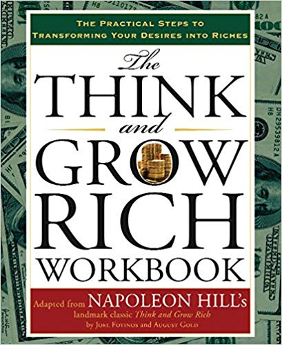

Think and Grow Rich
By Napoleon Hill
Think and Grow Rich is based on Hill's earlier work The Law of Success, said to be the result of more than twenty years of study of many individuals who had amassed personal fortunes.
Hill studied their habits and drew some 16 "laws" to be applied to achieve success. Think and Grow Rich condenses them, providing the reader with 13 principles in the form of a "Philosophy of Achievement". Mark Hansen has said time has shown that two of the laws/principles are most important: 1) The MasterMind principle/process and 2) "Know very clearly where you want to go."
The book asserts that desire, faith, and persistence can propel one to great heights if one can suppress negative thoughts and focus on long-term goals.

More information
- Think and Grow Rich was written in 1937 by Napoleon Hill, promoted as a personal development and self-improvement book. Hill writes that he was inspired by a suggestion from business magnate and later-philanthropist Andrew Carnegie.
- While the book's title and much of the text concerns increasing income, the author insists that his philosophy can help people succeed in any line of work, to do and be anything they can imagine. First published during the Great Depression, the book by Hill's death in 1970 had sold more than 20 million copies. By 2015 more than 100 million copies had been sold worldwide.
- It remains the biggest seller of Napoleon Hill's books. BusinessWeek magazine's Best-Seller List ranked it the sixth best-selling paperback business book 70 years after it was published. Think and Grow Rich is listed in John C. Maxwell's A Lifetime "Must Read" Books List.
- information this book in thai webpage at สรุปหนังสือ Think and Grow Rich ตีแผ่กฎแห่งความสำเร็จ ที่ถูกครอบงำมากกว่า 80 ปี